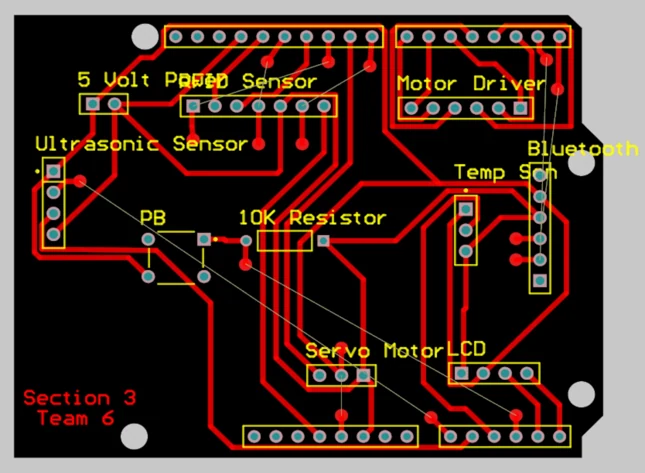
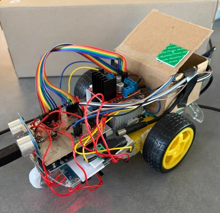
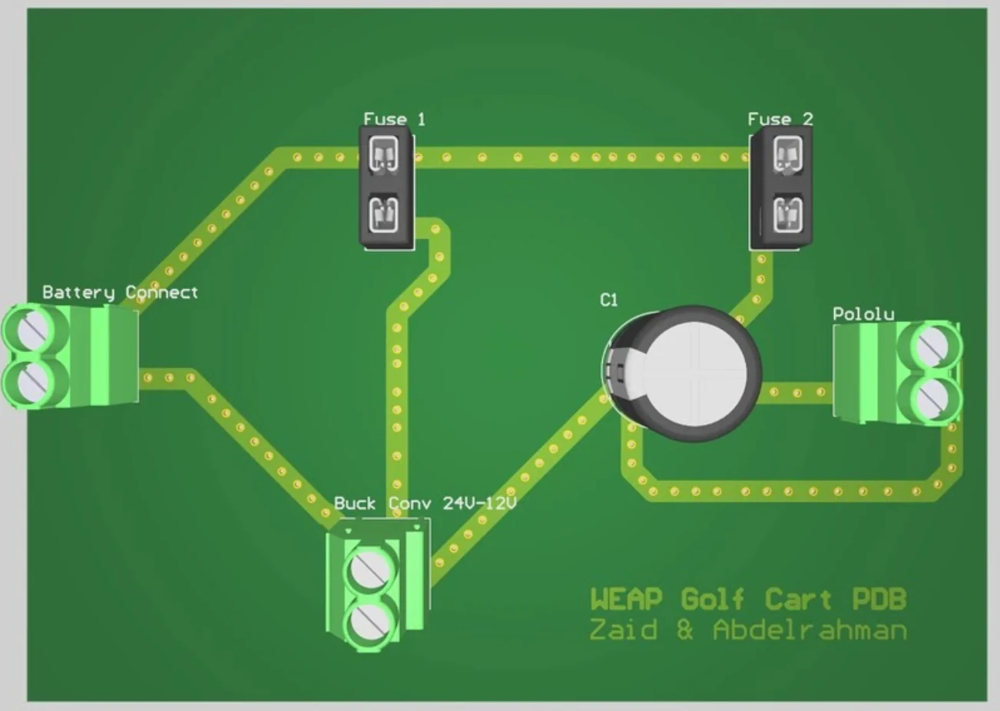
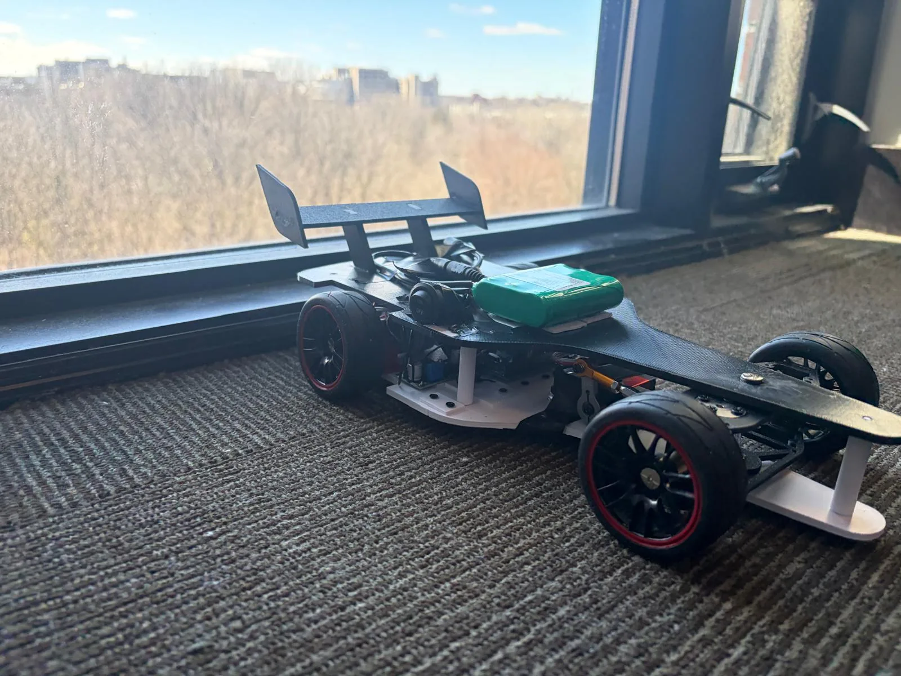

Power & PCB design
Power distribution boards in Altium Designer: IPC-2221 trace sizing, 2 oz copper, via stitching, fused branches and isolated logic rails.
Hi, I'm
> Electrical Engineering @ Western
I design power distribution boards, wire and debug robots, and write the control code that makes them move. Recently that has meant an autonomous golf cart, a 1/10-scale race car and building electrical design work in industry.

01What I do
From copper pours to control loops, I like owning the whole path: the schematic, the board, the wiring harness and the firmware that ties it together.
Power distribution boards in Altium Designer: IPC-2221 trace sizing, 2 oz copper, via stitching, fused branches and isolated logic rails.
PWM throttle control through high-current ESCs, an electronic differential, and LiDAR + IMU integration for real-time SLAM.
Load calculations, cable sizing and voltage drop, plus AutoCAD and Revit drawing sets from my internship at Epsilon Engineers & Architects.
02Selected work
Each project has a full write-up with the design decisions, specs and results. Start with the delivery robot for the most complete build.

FeaturedWestern University · Team design project
Custom Altium PCB shield that ties 5 sensors and 4 actuator systems into one Arduino control loop, with an RFID-locked cargo box and a 20 cm obstacle stop.

CurrentWestern Engineering AutoPilot · Oct 2025 – present
PWM throttle control through a high-current ESC, and a 2-layer, 2 oz copper power distribution board that carries 15–20 A from a 24 V LiFePO₄ pack.
Dr. Zaki Research Lab · Sep 2026 – present
Custom Altium power board that isolates the VESC and steering-servo rails from noise-sensitive logic, plus 2D LiDAR and IMU integration for real-time SLAM.
Read the write-up
▶ VideoWestern Engineering AutoPilot
Electronic differential on two independent rear motors, servo steering, Arduino C++ firmware for wireless PS5 input, and a SolidWorks chassis.
Read the write-upWestern University · Electronic circuits
TL082 op-amp generator producing square, triangle and sine waves at 4.4 kHz and 10 V, simulated in Micro-Cap and built on an Altium PCB.
Read the write-upWestern University · Digital logic
8-state Moore FSM in Quartus Prime. A custom Gray-code state assignment and Karnaugh-map simplification cut gate input cost from 83 to 63.
Read the write-up03Where I've worked
Dr. Zaki Research Lab, Western University
Roboracer Autonomous Race Car · 1/10-scale autonomous vehicle platform
Clearpath Husky UGV · outdoor mapping research robot
Epsilon Engineers & Architects · Amman, Jordan
Western Engineering AutoPilot
04Education & toolkit
Bachelor of Engineering Science · Electrical Engineering
Coursework
05Contact
I'm looking for 12–16 month co-op and internship terms starting May 2027 in power and electrical design, controls, robotics, embedded systems or hardware test.